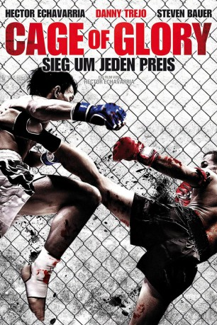

#1084 Cage of Glory
Alternativ: Chavez Cage of Glory
 
 IMDB-Wertung: 4.3 / 10
IMDB-Wertung: 4.3 / 10  Metascore: 0
Metascore: 0 
Hector Chavez kriegt sein eigenes Leben kaum auf die Reihe; da schafft er es noch weniger die steigenden Arztkosten für die dringend notwendige Behandlung seines kranken Sohnes zu finanzieren. Um sich irgendwie aus dieser fatalen Lage zu befreien, frischt der Vater schließlich seine Fertigkeiten im Mixed-Martial-Arts auf und wagt sich damit in den Untergrund von Los Angeles. Dort wird Hector schnell zu einer festen Größe, doch seine Geldprobleme sind damit noch nicht vom Tisch. Sein Sprössling liegt im Krankenhaus und braucht dringend einen operativen Eingriff. Einige Videoaufnahmen seiner Kämpfe verbreiten sich rasant in der Szene und auf diesem ungewöhnlichen Weg qualifiziert er sich für die Mixed-Martial-Arts-Weltmeisterschaft und darf gegen den amtierenden und für seine Grausamkeit bekannten Champion antreten. Der besorgte Vater geht aufs Ganze. Ihm bleibt auch kaum etwas anders übrig, denn mit dem Preisgeld könnte er die Operation bezahlen, die das Leben seines Sohnes retten kann…
Jahr: 2013
Dauer: 92 Minuten
FSK: 18
Land: USA Studio: Ascot Elite Home EntertainmentTonspuren: DTS - ,
Untertitel:
Auflösung: 1080p (1920x1080) Größe: 5283 MB
Genre: Drama, Sport
Regisseur: Hector Echavarria
Drehbuch: Hector Echavarria
Soundtrack: Neil Argo
Darsteller:
- Hector Echavarria als Hector
 Danny Trejo als Mando
Danny Trejo als Mando Steven Bauer als Jose
Steven Bauer als Jose Patrick Kilpatrick als Stone
Patrick Kilpatrick als Stone James Russo als Tony
James Russo als Tony- Patricia Ponce de León als Maria
- Josh Samson als Ian Rabin
- Heath Herring als Cage Fury , rumored
- Sadie Katz als Gia Chavez
 Robert Miano als Cage Fury's Manager
Robert Miano als Cage Fury's Manager- Cela Scott als Nurse Jackie
- Jonathan Tabler als Steve Black
- Trevor Lawrence Young als Dr. Baker
- Marty Wood als Fight Promoter
- Trey McCurley als Rowland Schwenker
- Kristin Lorenz als Karen
- Darius Devontaye Green als Fight Patron
- Ieva Georges als Assistant
- Rob Fuller als Savage McClain
- Derek Easley als Fight Patron
- Scott Conte als Mr. White
- Everett Booth als Press Reporter
- Max Aria als Fighter
- Chris Triana als Carlos Gomez
- Jennifer Lieberman als Nurse
- Jillian Nelson als Jennifer Johnson
- Walter Gray IV als Drunk #2
- Gavin Perry als News Reporter
- Heidi Appe als Reporter
- Erika Jordan als Escort
- Mahedi Rakib als Reporter
- Elisha Skorman als News Reporter
- A.J. Vittone als Press Reporter
- Rick Mancia als Diego
- Saagar Shaikh als Bar Patron
- Bruna Rubio als Cage's girl
- Rique als Fight Patron
- Jaton Justice als Fight Patron
- Christopher Jack als Thug
- Rosalio Garcia als Fight patron
- HenRii Coleman als Heckler
- Liam Patrick Thomas Finegan-Smith als Martin Chavez
- Mads Finegan-Smith als Young Hector
- Tairrie Atkinson als Nurse
- Damian Forest Light als Fight Patron
Datei: X:\FSK18-2013\Cage of Glory (2013, FSK, 1920x1080).mkv seit 18.05.2015
Festplatte: FSK18
 Es gibt insgesamt 26 Filme in der Gruppe 'FSK18-2013'
Es gibt insgesamt 26 Filme in der Gruppe 'FSK18-2013'